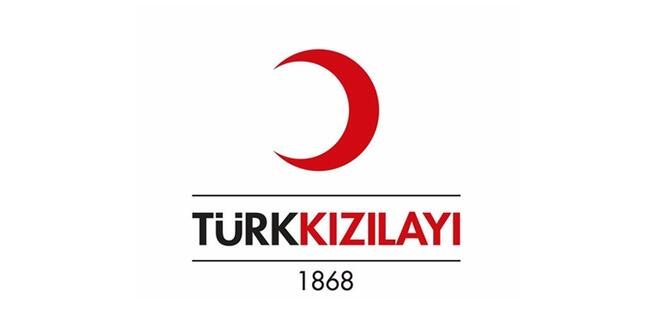
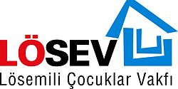

Mustafa Serdar Konca
Home
Education
Licenses and Certificates
Skills
My Volunteer Work
Contact
Kızılay

I have been active voluntarily in Izmir branch of the Turkish Red Crescent, where I became a member in November 2019.
Lösev

I am active voluntarily at the Lösev İzmir Branch, where I became a member in January 2020.